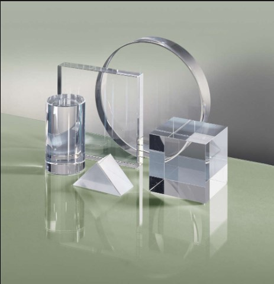

ขวด เป็นภาชนะที่มีรูปทรงยาว ทั่วไปใช้บรรจุน้ำ หรือของเหลว ส่วนใหญ่ทำจากวัสดุประเภทแก้ว หรือพลาสติก รูปทรงของขวดมีหลายแบบ โดยทั่วไปปากขวดมีขนาดหน้าตัดเล็กกว่าตัวขวด ถ้าหน้าตัดเท่ากันเรียกว่ากระบอก
ชนิดของขวดแก้ว
วิธีการนำมารีไซเคิล
ประโยชน์ของการนำขวดแก้วมารีไซเคิล
ชนิดของขวดแก้ว
&nbs1. แก้วโซดาไลม์ (Soda-lime glass)
ผลิตจากวัตถุดิบหลัก คือ ทราย โซดาแอช หินปูน เป็นแก้วที่พบเห็นได้โดยทั่วไป มีราคาถูกได้แก่ แก้วที่เป็นขวด แก้วน้ำ กระจก เป็นต้น สามารถทำให้เกิดสีต่างๆ ได้โดยการเติมออกไซด์ที่มีสีลงไป
2.แก้วที่บอโรซิลิเกต (Borosilicate glass ) หรือ Pyrex
เป็นแก้วที่มีการเติมบอริค-ออกไซด์ ลงไป ทำให้มีค่าสัมประสิทธิ์การขยายตัวเนื่องจากความร้อนต่ำ และทนต่อการเปลี่ยนแปลงความร้อนได้ แก้วที่ได้สามารถนำไปใช้ทำเครื่องแก้ววิทยาศาสตร์ ทำภาชนะแก้วสำหรับใช้ในเตาไมโครเวฟ เป็นต้น
3.แก้วตะกั่ว (Lead glass) หรือแก้วคริสตัล
เป็นแก้วที่มีสารผสมของตะกั่วออกไซด์ อยู่มากกว่า 24% โดยน้ำหนัก จะเป็นแก้วที่มีดัชนีหักเหสูงมากกว่าแก้วชนิดอื่น ทำให้มีประกายแวววาวสวยงาม และแกะสลักเป็นลวดลายต่างๆ ได้ ใช้ทำเครื่องแก้วที่มีราคาแพง เช่นเครื่องประดับ โคมไฟระย้า เป็นต้น
4.แก้วอลูมิโนซิลิเกต (Alumino silicate glass)
มีอลูมินาและซิลิกาเป็นส่วนผสมหลัก มีค่าสัมประสิทธิ์การขยายตัว เนื่องจากความร้อนต่ำ และมีจุดอ่อนตัวของแก้ว (softening point) สูง พอที่จะป้องกันการเสียรูปทรงเมื่อทำการอบ เพื่อเพิ่มความแข็งแรงให้แก่ผลิตภัณฑ์
5.แก้วอัลคาไลน์-เอิร์ท อลูมิโนซิลิเกต (alkaline-earth alumino silicate)
เป็นแก้วประเภทลิเธียมอลูมิโนซิลิเกตที่มี TiO2 หรือ ZrO2 ผสมอยู่เล็กน้อย ซึ่งจะทำให้เกิดผลึกในเนื้อแก้ว ซึ่งอาจทำให้แก้วมีความทึบแสงหรือโปร่งใส ขึ้นกับชนิดของผลึก กลาส-เซรามิกส์จะทนทาน และมีสัมประสิทธิ์การขยายตัวเนื่องจากความร้อนต่ำมาก สามารถนำไปใช้เป็นภาชนะหุงต้ม หรือเป็นแผ่นบนเตาหุงต้มได้
6.กลาส-เซรามิกส์ (glass-ceramics)
ประเภทที่ 6 นี้ คือ พลาสติกที่มีชื่อว่า PS เป็นพลาสติกมีลักษณะโปร่งใส มีเนื้อที่เปราะและแตกง่าย จึงนิยมน้ำมาผลิตเป็น กล่องโฟม ถ้วย และชาม เพราะมีความทนต่อกรดและด่าง และยังทนกับอุณหภูมิได้ตั้งแต่ -10c° - 80c° อีกทั้งเนื้อพลาสติกประเภทนี้ยังสามารถพิมพ์สีสันและลวดลายสวยงามได้
7.แก้วบริสุทธิ์(Fused silica glass)
ใช้ทรายบริสุทธิ์ 100 % ใช้สำหรับงานที่เกี่ยวข้องกับยานอวกาศ

Back to top
วิธีการนำมารีไซเคิล
กระบวนการรีไซเคิลแก้วเริ่มต้นด้วยความจำเป็นในการจัดเรียงล่วงหน้าและจัดส่งภาชนะแก้วไปยังโรงงานต่างๆ เช่น Selective Municipal Waste Collection Point (PSZOK) จากนั้นแก้วจะไปที่ห้องคัดแยก ของเสียที่เป็นโลหะ รวมถึงปลั๊ก ฝาปิด หรือฝาปิด จะถูกลบออกบนสายพานลำเลียงที่ติดตั้งเครื่องแยกแม่เหล็กไฟฟ้า พนักงานในพื้นที่คัดแยกจะเลือกสิ่งของและวัตถุดิบที่ไม่จำเป็นทั้งหมดที่ไม่เหมาะสำหรับการรีไซเคิลแก้ว (โดยปกติ ได้แก่ ถุงฟอยล์หรือถุงกระดาษ เป็นต้น) วัตถุดิบจะถูกโอนไปยังเครื่องบดย่อย เมื่อบดแล้วจะแบ่งออกเป็น 2 กลุ่มสีโดยอัตโนมัติ: โปร่งใสและสี ในที่สุด cullet ไปถึงโรงงานหลอม ซึ่งผ่านขั้นตอนการประมวลผลเพิ่มเติมหลายประการ เช่น:
• บดซ้ำ
• การทำความสะอาดแบบรวม
• หลอมละลายในเตาหลอมเหล็ก
• การก่อตัวของผลิตภัณฑ์แก้วใหม่
Back to top
ประโยชน์ของการนำขวดแก้วมารีไซเคิล
ประโยชน์อีกประการหนึ่งของแก้วรีไซเคิลคือการใช้งานที่หลากหลาย มีความเข้าใจผิดว่าแก้วจากถังขยะสีเขียวใช้สำหรับการผลิตขวดสำหรับเครื่องดื่มหรือน้ำหอมเท่านั้น โรงงานผลิตแก้วและโรงงานผลิตเฉพาะทางใช้แก้วมวลรวมในการผลิตรายการต่างๆ เช่น
• บรรจุภัณฑ์แก้วสำหรับอุตสาหกรรมอาหาร ยา และเคมี (ขวด ขวดแก้ว จาน)
• ส่วนประกอบหลอดไฟประหยัดพลังงาน
• องค์ประกอบของโคมไฟ หลอดฟลูออเรสเซนต์ โป๊ะโคม
• เครื่องแก้วตกแต่ง
• ใยแก้ว
• ฉนวนลูกปัดแก้ว
• เศษไม้ประดับสวน
Back to top
แหล่งที่มา : http://www.packingsiam.com/index.php?lay=show&ac=article&Id=538991021&Ntype=7
แหล่งที่มา : https://www.products.pcc.eu/th/blog/%E0%B8%81%E0%B8%B2%E0%B8%A3%E0%B8%A3%E0%B8%B5%E0%B9%84%E0%B8%8B%E0%B9%80%E0%B8%84%E0%B8%B4%E0%B8%A5%E0%B9%81%E0%B8%81%E0%B9%89%E0%B8%A7%E0%B8%84%E0%B8%B7%E0%B8%AD%E0%B8%AD%E0%B8%B0%E0%B9%84%E0%B8%A3/